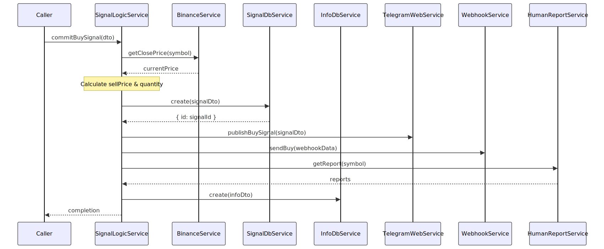

This document covers the SignalLogicService class and its role in processing, persisting, and distributing trading signals within the cryptocurrency trading platform. The SignalLogicService acts as the core business logic layer that commits validated signals to the database, calculates trading parameters, and coordinates notifications across multiple channels.
For information about signal generation and validation rules, see Signal Generation and Validation. For details about the automated job processing that triggers these signals, see Automated Job Processing.
The SignalLogicService is the central coordinator for signal processing operations. It handles three types of signal actions: buy signals, wait signals, and close notifications. The service integrates with multiple external systems to ensure complete signal lifecycle management.

The SignalLogicService processes three distinct signal types, each following a specific workflow pattern. All signal processing involves price calculation, database persistence, and multi-channel notification distribution.

The commitBuySignal method handles the creation of new buy orders. It calculates trading parameters based on configuration constants and current market prices, then persists the signal and distributes notifications.
| Parameter | Calculation | Source |
|---|---|---|
buyPrice |
Current close price from Binance | BinanceService.getClosePrice() |
sellPrice |
Buy price + revenue percentage | percentValue(price, 100 + CC_LADDER_TRADE_REVENUE) |
quantity |
USD amount converted to coins | usdToCoins(CC_LADDER_BUY_USDT, price) |

The commitWaitSignal method handles situations where the analysis indicates waiting is the optimal strategy. Unlike buy signals, wait signals do not create tradeable orders but still log the decision and notify relevant channels.
InfoDbService for analysis
The commitCloseNotify method handles the closing of existing buy orders when sell conditions are met. This method updates the original signal record and creates audit logs for the completed trade.
The method includes validation logic to ensure data integrity:
if (dto.averagePrice === -1) {
throw new Error(
`signalLogicService commitCloseNotify invalid averagePrice for signalId=${dto.signal.id}`
);
}

The InfoDbService maintains a comprehensive audit trail of all signal processing activities. The information logging system uses the IInfoDto schema to standardize log entries across all signal types.
| Field | Type | Description | Example Values |
|---|---|---|---|
action |
"sell" | "buy" | "wait" |
Type of signal action | "buy", "wait", "sell" |
content |
string |
Human-readable description | Signal comment or JSON data |
date |
Date |
Timestamp of action | Current date/time |
symbol |
string |
Trading pair symbol | "BTCUSDT", "ETHUSDT" |
price |
string |
Formatted price at time of action | "45000.00" |
info |
string |
Additional metadata | Signal-specific information |
internal |
string |
Internal system data | Signal report data |
reports |
string[] |
Associated reports | Market analysis reports |

The SignalLogicService serves as a central integration point connecting multiple subsystems. Understanding these integration points is crucial for maintaining and extending the signal processing pipeline.
| Service | Purpose | Key Methods Used |
|---|---|---|
SignalDbService |
Signal persistence | create(), update() |
InfoDbService |
Audit logging | create() |
BinanceService |
Price data | getClosePrice(), formatPrice() |
TelegramWebService |
Telegram notifications | publishBuySignal(), publishWaitSignal(), publishSellNotify() |
WebhookService |
HTTP notifications | sendBuy(), sendWait(), sendSell() |
HumanReportService |
Market reports | getReport() |
The service relies on configuration constants that control trading behavior:
CC_LADDER_BUY_USDT: USD amount per buy orderCC_LADDER_TRADE_REVENUE: Target profit percentage